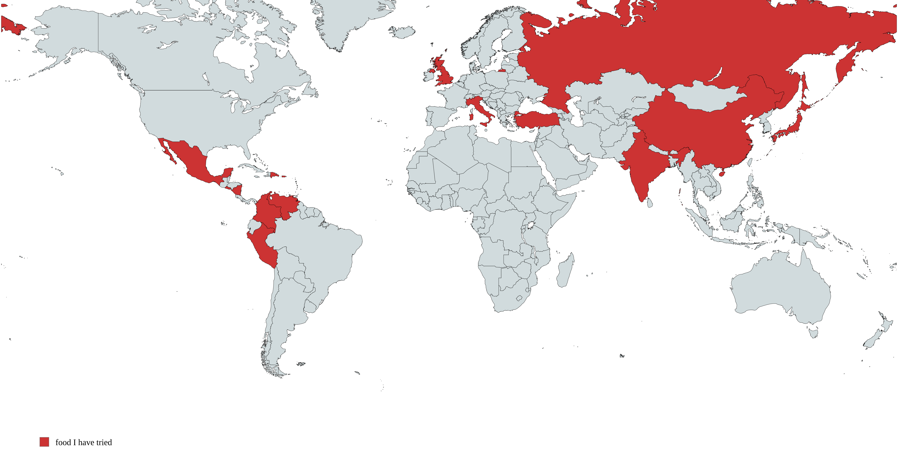

今日は雪が降っている。雪はあまり好きじゃないですが、この天気がいいと思います。毎日家でいますから、めんどくさいじゃないと思っている。でも、外出るのは大変です。 今朝に妹の小学校見に行きますた。それで、雪が私の靴に入ってしまった。とても冷たいでした。ほんとに自殺をしたかった。
けどさ、今日のトピックそのことじゃないでした。みんな外国料理の中で何が一番好きですか？
ピッザは最高、カルボナーラとカプチノも。そういえば、大好きな料理がない。世界の中であまり料理を食べたことがない。だから２０２６にその積もりをしてです。 今まで、コロンビアのとメキシコのとイタリアのと中国のとペルのとルシアのとイギリスのとニカラグアのとトルコのとインドのと日本の料理を食べたことがあります。 でも、まだまだ食べたい料理がたくさんあります。

世界の地図。赤いの国は食べたことがある
じゃあまたね！！！